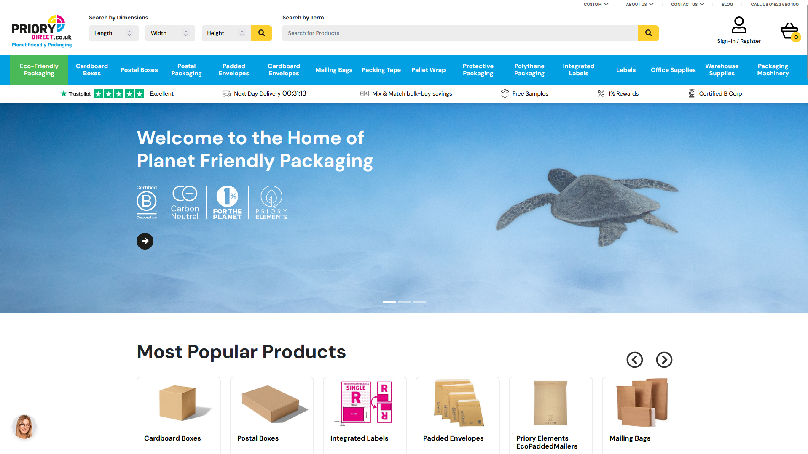
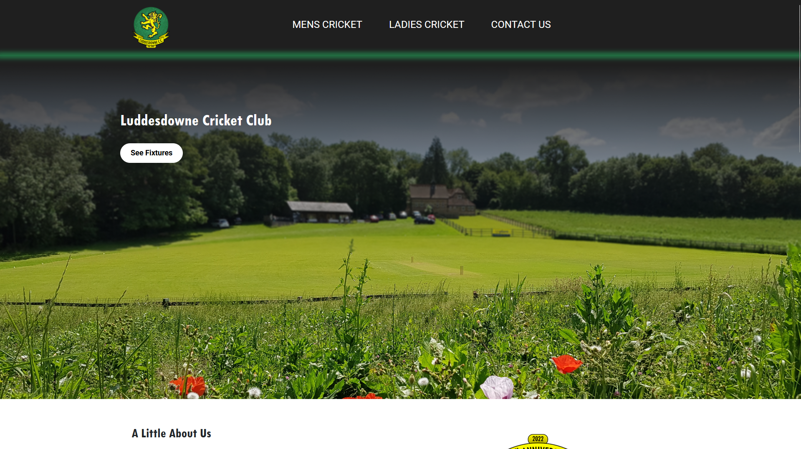
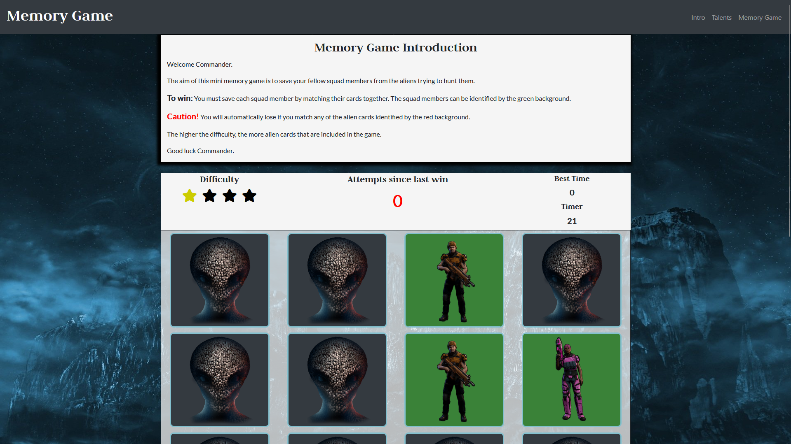
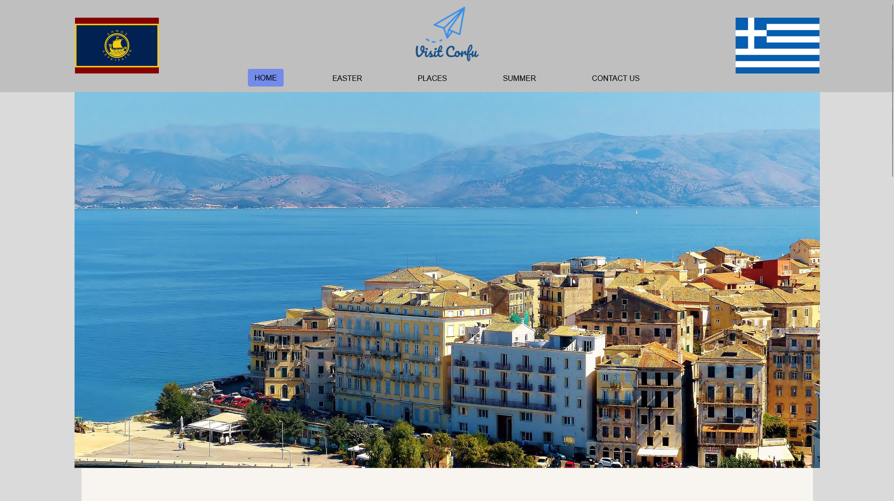

My Projects

Priory Direct
Where I currently work - an ecommerce site, which is entirely bespoke. Over the four years I have worked here, I have built most of the features that you can see on the site and implemented many of the 3rd party APIs that we use.


Luddesdowne Cricket Club
A labour of love as this is my local village cricket team, which I am a member of. I rebuilt the website and have it primed so that I can continue to add features in the future.
Stack Used

Xcom Calculator & Memory Game
A project I undertook during my diploma - this project focuses on Javascript and using it to make the pages interactive. Have a go at the memory game and see if you can beat it!

Visit Corfu
One of my first projects during my diploma - this project focuses on the HTML and CSS to create an advertising website to visit the Greek Island of Corfu.